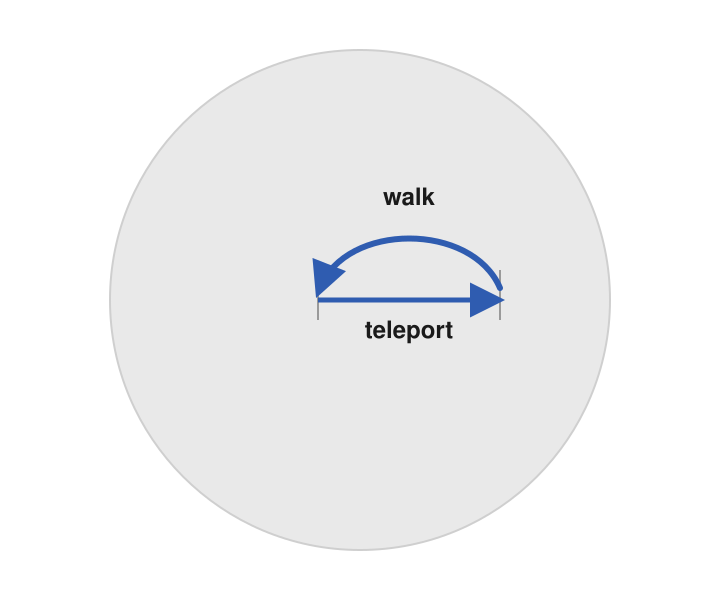
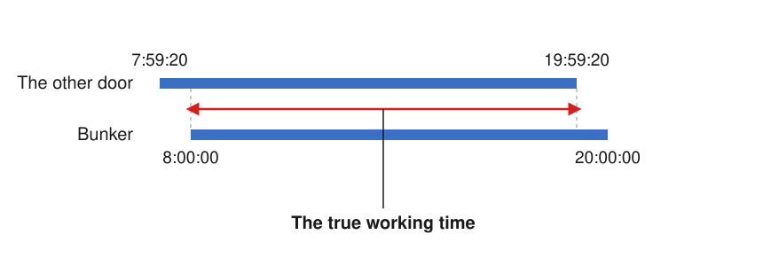
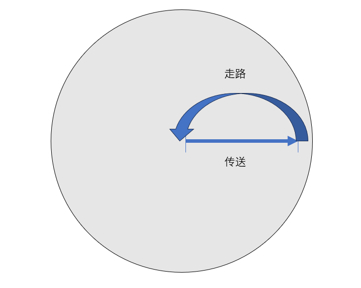
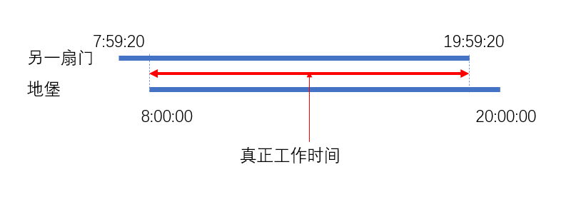

“Senpai, have you ever heard the story of the five heroes who battled the undying dragon?”
My assistant looked up and fixed her eyes on me. In her hands she cradled a storybook so old that its cover was on the verge of peeling away. I took the book from her and began to read the page she had been looking at.
The Tale of the Heroes Who Battled the Dragon
Long, long ago, there were five warriors who vied for the honor of marching against an undying dragon.
Each of the five warriors longed to strike the decisive blow, to be the first to cut down the dragon and win everlasting fame in a single stroke. Yet, by the warriors’ ancient custom, every warrior had to face the dragon alone, in single combat. In the end the heroes resolved to fight the dragon one after another in order of age, until one of them returned in triumph.
The dragon dwelt in a most mysterious place—said to lie within a cavern so deep it had no bottom, so dark it never knew the light of day. To reach the road of conquest, one had to enter the “Gate of Battle” set in place by those who had gone before; passing through this gate, a warrior could come directly before the dragon. And so the five warriors set out upon their road of battle.
The first warrior already wore a long, flowing beard, and was clad only in light armor. By the agreement, he was allowed to remain in the cavern for only one hour, and the moment the battle ended he had to return at once. He was, true to his reputation, a seasoned old veteran, brave and battle-hardened; though advanced in years, he was able to hold the dragon to a standstill and gave no ground. After half an hour, however, his strength slowly began to fail him. By then the dragon, though covered in wounds, looked only the more savage for it. He would not flee, and in the end he died a cruel death beneath the dragon’s claws.
The second warrior was clad head to foot in armor and bore a heavy sword. Having waited a long while outside the “Gate of Battle,” he had already guessed that the one before him was no match for the dragon; he hoped only that the first man had worn down the dragon’s ferocity, so that he himself might triumph over it. After one hour, he reckoned it was time to go in and collect the old fellow’s corpse. To his surprise, the moment he set foot in the cavern, he beheld a colossal dragon as whole and unharmed as ever, and the old man’s body was nowhere to be found—most likely it had already been devoured by the dragon. This warrior had no choice but to grit his teeth and fight on, and in the end, no match for the dragon’s hand, he too was buried there.
The third and fourth warriors who followed likewise failed to return alive.
The fifth and youngest warrior waited outside for four hours, yet not a single man came out. Trembling, he ventured to enter the “Gate of Battle.” To his great astonishment, after four warriors had taken their turns at the dragon, the beast stood utterly without a scratch, and the bodies of the four warriors were nowhere to be found either. He fought the dragon for nearly an hour, his whole body covered in wounds, and it seemed he too was about to be buried in that place. Terror restored his reason on the spot; he dared not contend any longer, and could only abandon the glory of a warrior and flee from the field, escaping back along the “Gate of Battle.” Fortunately, the others had all perished, so no one witnessed his betrayal of the warrior’s spirit. And thus the great undertaking of the five warriors’ campaign against the dragon ended in failure.
The Magic Doors of Stonewell
I set the book down. It had no title; from a cursory glance through it, it seemed to be a collection of legends and folk tales. This one piece alone was strange—there was no winding plot, and the author had not even bothered to invent names for the characters.
“Senpai, don’t you think parts of this piece are a bit too much of a coincidence?” My assistant closed the book and returned it to its place.
“You mean—the thing we’re looking for is this ‘Gate of Battle’?”
I suppose I should first explain what had happened. I am a researcher of strange phenomena, specializing in the study of legends and anomalous ruins. At university I became acquainted with a junior schoolmate who was fond of psychic phenomena, and she now serves as my assistant. This very summer, the two of us traveled together to a remote village on a small island in the Pacific. This island is part of a surrounding archipelago, lying near the equator. Two centuries ago it was occupied by the British, who mined a great quantity of minerals here and also left behind a great many mysterious ruins—among them the important relics relating to the study of magic that interest us most. The island is roughly circular, with a radius of about twenty kilometers. It has no means of transport whatsoever; only winding, twisting footpaths coil among the mountains, so that travel is exceedingly slow. Starting from the harbor, it took us four hours to cover the full twenty kilometers, and at last we reached our destination. Although the local villagers were few, we were nonetheless given a warm welcome.
According to our research, this island has preserved the magical ruins the British left behind in their day, well worth a visit. Our purpose in coming was to investigate the fabled “Magic Doors,” mysterious relics left on this island during the period of British occupation.
Upon entering the village, my first impression was of the scenery. The village lay hidden among rolling green hills; the houses were few, all built of dull gray stone, low and sturdy, their roofs thatched thickly with straw. Narrow cobbled paths wound this way and that, with wild grass and purple flowers growing along their edges, swaying whenever the wind blew. In the center of the village stood a small church, its stone walls overgrown with vines, a rust-stained cross atop its steeple; now and again its bell rang out a few times, low and far-reaching. All around was so still that there was nothing but birdsong and the sound of the wind; in the distance everything was misty, as though veiled in gauze.
The one who received us was a priest of the church named Steyl, who welcomed us warmly. He was tall and thin, dressed in a black robe; he pushed open the church’s creaking wooden door, invited us in, and brought us hot tea. He spoke of the village’s history, telling us that Stonewell had once been a British dominion, lively several centuries ago, but now had become an unworldly little place. The villagers’ traditional industry was the ore trade, and these days more and more of the young people were coming to know the world beyond the village.
Fortunately, when the priest learned where we came from, he did not turn us away; on the contrary, he spoke at length about the history of this island and its connection with magic.
“Since you know of our island’s ties to England, perhaps you also know of the old English magicians.”
“I should be glad to hear of it.”
“Perhaps you know the legend. Centuries ago in England there was a magician of formidable power, who could vanish from before a crowd in the blink of an eye, without a trace, and then appear in an instant a thousand miles away. People called his ability the ‘Art of Shifting Form and Shadow.’ Many longed to learn this skill.”
“And—were there many who mastered this skill?” my assistant asked with keen interest.
The priest shook his head.
“In truth, his ability was extraordinarily advanced; an ordinary person could never master his ‘Shifting Form and Shadow.’ However, he left behind for posterity a most important legacy—the ‘Magic Doors.’ He realized that most people would find it difficult to learn magic of such difficulty, so he set about studying how to attach such magic to an object, and in the end he obtained this very thing.”
The priest waved his hand, signaling for us to follow him through the church.
In a small room on the second floor of the church, I saw two doors placed in the middle of the room—more precisely, two door frames. Seen from outside, the place in the middle of the frame where the door panel ought to be was veiled by a layer of black-purple luminous screen, like a door curtain, so that one could not see the scene behind it. I reached my hand forward and passed quite naturally through the screen into it; I could see only the part of my arm that remained outside.
“Sir, you may try walking into the door before you.”
I tried walking into the luminous screen, entering the door frame. The frame itself was the size of a normal door, exceedingly thin, yet it stood perfectly upright. Once I had passed through the frame, I suddenly found that I had arrived at the other end of the room. As it turned out, I had emerged from the other door. I entered the frame again by the same route and returned at once to my original place.
In other words, this was a teleportation gate.
I tried entering the original door from its other side, but nothing happened.

“The Magic Doors exist in pairs,” said the priest. “Each door has magic in one direction only. Passing through from the other direction has no effect whatsoever. This is the function of the Magic Doors: they can swiftly send a person from one place to another, linking two regions together. It is said that some descendant—I know not of which generation—of that magician came to this island to pursue the study of magic, and left several pairs of Magic Doors here. What we see before us is one such pair.”
“One such pair?”
“This is not the only pair of Magic Doors on the island,” the priest said with a smile. “In a little while you shall see another pair.”
Just then, the clock struck eight o’clock in the evening, local time. As though obeying a command, the luminous screen of the Magic Doors suddenly went out, leaving only the two door frames standing in place.
“Magic requires time,” the priest said with a nod. “In fact, as far back as several centuries ago, the magicians of England had already discovered that the Magic Doors can function properly only in the daytime. To be precise, during the hours from eight o’clock in the morning to eight o’clock in the evening. Therefore, the moment eight o’clock in the evening arrives, the power of the Magic Doors vanishes at once. Until eight o’clock the following morning, the Magic Doors are no different from ordinary door frames.”
“Come to think of it, it’s quite remarkable that these two frames can stand upright without any external support—their balance is excellent.” My assistant walked up to one of the doors and tried to move it, but it would not budge in the slightest.
“The Magic Doors have stood here perfectly well since the age of the great magician; how could ordinary folk like us move them?” The priest laughed aloud. At that moment, there came into my mind a rather popular animated film from a few years back, which had a similar plot device in it.
The next morning, we followed the priest to the western part of the village and walked perhaps a hundred or two hundred meters. We came upon a bunker; along the way we encountered two young men, whom the priest introduced as his disciples at the church—one named Yuningle, the other Vilier. They shook our hands in greeting. We proceeded together into the bunker. The first basement level of the bunker was a storeroom, piled high with all manner of things. On the second basement level there was a door before us, which the priest successfully unlocked with his own key; we then entered a corridor, at the end of which was a Magic Door, its luminous screen shimmering, set into the wall. It was already past eight o’clock in the morning, so the Magic Door had opened again.
“Wouldn’t you like to see what lies behind it?” the priest said with a smile, leading us through the door one after another.
Behind the door, all we saw was a stretch of darkness. The priest took out a flashlight and switched it on, and only then could I slowly make out the whole of the place.
This was a sealed mine cavern deep underground; embedded in the rock walls all around were rare and precious minerals. After examining them, I broke into a cold sweat. The gemstone resources here were astonishingly abundant—truly no small fortune.
“The cavern may be small, but its value is high indeed,” my assistant remarked with feeling. “Where exactly are we now?”
“Underground, I’m afraid,” said the priest. “This place is very far from the surface, and we ourselves have never known where it lies. Only, thanks to this pair of Magic Doors, we can come by abundant treasure directly. In recent years I have overseen this place, mining slowly and with great care. There is, however, a gang of scoundrels in the village, greedy for quick gains, who would mine the whole thing out in one go. If word got out that we can extract such a quantity of rare treasures all at once, we would likely be in for trouble here. They come here and mine in secret on their own, and there is nothing I can do about it. I can only do my own small part within the village, to maintain the village’s lasting existence. From the time this place was discovered until now, I have held the key to the outer door, opening this place for mining only at midday, and keeping the key safely in my own care at all other times.”
We returned to the Magic Door and made our way back to the surface along the same route. From the priest’s words, I had a faint sense of certain conflicts existing within the village. What I never anticipated, however, was that a murder would occur that very night.
The Locked Room
That night, according to the priest’s disciples Yuningle and Vilier, the priest went to the bunker together with the two disciples at seven o’clock in the evening. The priest had them wait outside the bunker door. Unexpectedly, by eight o’clock the priest had still not come out. After the two had conferred, Yuningle entered the bunker to look for the priest, while Vilier kept watch at the bunker door. Since the Magic Door had already closed, Yuningle could only search about within the bunker. Whether in the storeroom or in the corridor, not a single figure was to be seen. In the end the two could only conclude that the priest had entered the mine cavern, and that, the time having passed, he was unable to return. The next morning, my assistant and I followed the two men to the front of the Magic Door, and the moment eight o’clock in the morning arrived, we passed through the Magic Door and entered the mine cavern, where we found the priest’s body.
The priest had been stabbed to death with a sharp piece of ore. A weapon of this sort could be found everywhere in this place; there was nothing peculiar about it. Before long, my assistant and I discovered that this was a textbook locked room—from the moment the priest entered the bunker, the two disciples had kept watch at the door the whole time. Although the possibility that someone had already been inside beforehand could not be ruled out, no other person could be found in either the bunker or the mine cavern. When we entered the mine cavern, we were also very careful, eliminating the possibility that someone had hidden in the cavern and slipped out secretly after we entered. Since no other person had been seen leaving the bunker the previous night, the murderer could only be in the mine cavern—yet no one besides the dead priest could be found in the mine cavern either.
On Yuningle’s suggestion, my assistant and I began our investigation from the angle of motive, and very soon narrowed it down to three people who had considerable conflict with the priest. All three had fallen out with the priest over the development rights to the mineral deposits, and so had ample motive to commit the crime. The first was named Bill; this man had no alibi at all for that night. By his own account he had gone to bed early, but slept poorly, and went to the bar at six o’clock the next morning, drinking until nine o’clock—for which time there are people who can vouch. The second was named Arnal; this man bought a few things at the night market at half past eight in the evening and then went home, which took only five or six minutes; apart from that, no one can account for where he was. The third was named Jizhoue; this man went to the church at half past seven in the evening to collect some free daily necessities, and went there again at eight o’clock the next morning—he was seen by witnesses on both occasions.
The Magic Doors…
“Can the Magic Doors be destroyed?” I asked them.
“With the abilities of modern people, it is impossible,” Vilier replied. “It is said that the great magician of old could do so, but people today absolutely cannot. However, we have also looked into the relevant records. Long ago there was a great magician who destroyed one of the doors. According to his account, the other door could no longer function either. This, too, confirms what we said earlier—for the Magic Doors to activate, both doors must be in proper working order. But for people today, even destroying a single door is an impossibility.”
“Then… could there be some Magic Doors hidden here that we don’t know exist?”
“Hard to say,” Yuningle replied. “As far as I know, owing to the powerful magic of the Magic Doors, within the space of a building at close range one can place at most two doors—by ‘close range’ here, I mean a position of about ten meters; at the very least, there cannot be more than two doors within a single room. However, I have heard that on the island, besides these two pairs of doors we know of, there is one more pair, hidden in a place we do not know. To learn where it is, I’m afraid one could only ask the magician of two hundred years ago.”
Another pair of doors?
“I, too, have heard of it from the records,” Vilier said with a nod. “But over all these years, we have never known where it actually is. To escape the locked room, could the culprit possibly have installed another Magic Door in the bunker? Or perhaps in the mine cavern? We have searched all these years and never found it.”
That evening, my assistant reported to me one last piece of information.
According to her observation, the Magic Door in the bunker did indeed open punctually at eight o’clock in the morning, but it did not close punctually at eight o’clock in the evening. In fact, forty seconds before the bell began to ring, the Magic Door in the bunker had already gone out.
The bell here is extremely accurate, ringing out punctually at eight o’clock in the evening, local time, every day. The time at which the Magic Doors on the second floor of the church had gone out, which we had witnessed earlier, also confirmed this.

Could something have gone wrong?
“先輩、不死の悪龍と戦った五人の勇者の物語を聞いたことはありますか？”
助手が顔を上げて私をじっと見つめた。その手には、表紙が今にも剥がれ落ちそうなほど古びた物語の本が抱えられていた。私は彼女の手から本を受け取り、彼女が読んでいたそのページを読み始めた。
『勇者と悪龍が戦った物語』
むかしむかし、五人の勇士がいて、一頭の悪龍の討伐をめぐって先を争っていた。
五人の勇士はいずれも一気呵成に、誰よりも先に悪龍を斬り倒し、一挙にその名を轟かせたいと望んでいた。しかし、勇士のしきたりにより、勇士はそれぞれ単身で悪龍と一騎打ちをしなければならなかった。勇者たちは結局、年齢の順に従って一人ずつ悪龍に戦いを挑み、誰か一人が凱旋するまで続けることに決めた。
悪龍の棲む場所はきわめて神秘的で、底知れぬほど深く、日の光も届かぬ暗黒の洞窟の中にあると言われていた。討伐の道へと通じるためには、先人が設えた“征戦の門”をくぐらねばならず、この門を抜ければ、勇士はまっすぐ悪龍の前に出ることができた。こうして、五人の勇士は己の戦いの道を歩み始めたのである。
第一の勇士はすでに長い髭を風になびかせ、身には軽い鎧をまとうのみであった。取り決めにより、彼は洞窟に一時間しかとどまることが許されず、戦いが終わればただちに戻らねばならなかった。彼はその評判どおり、勇猛で経験豊かな老将で、年は老いていたものの、悪龍と互角に渡り合い、引けを取らなかった。しかし、半時間が過ぎると、彼は次第に力が及ばなくなっていった。悪龍はこのとき満身創痍でありながら、かえって一段と凶暴さを増していた。彼は逃げようとせず、最後には悪龍の爪の下で無惨な死を遂げた。
第二の勇士は全身に甲冑をまとい、重い剣を手にしていた。“征戦の門”の外で長らく待つうちに、彼はすでに前の者が悪龍に敵わぬことを察しており、ただ前の者が自分のために悪龍の勢いを削いでくれて、自分が見事に悪龍を打ち負かせることだけを願っていた。一時間後、彼はそろそろ中に入ってあの老いぼれの亡骸を収めてやる頃合いだと思った。ところが思いもよらず、洞窟に足を踏み入れると、もとどおり無傷の巨龍がいるばかりで、老いぼれの遺体はまるで見当たらず、おそらくはすでに龍に喰われてしまったのであろう。この勇士はやむなく覚悟を決めて戦い続けるしかなく、最後には悪龍の手に敵わず、ここに葬られた。
続く第三、第四の勇士もまた、生きて還ることはできなかった。
最も若い第五の勇士は外で四時間待ったが、一人も出てくる者はなかった。おそるおそる、彼は“征戦の門”に入ってみた。彼が大いに意外に思ったことに、四人の勇士が次々と討伐を試みた後だというのに、この悪龍はなんと毛筋ほども傷ついておらず、四人の勇士の遺体もまた見つからなかった。彼は悪龍と一時間近く戦い、満身創痍となって、今にもここに葬られそうになった。恐怖がその場で理性を呼び戻し、彼はもはやこれ以上渡り合う勇気を持てず、勇士としての栄誉を捨てて戦いの場から逃げ出すよりほかなく、“征戦の門”に沿って逃れ出た。幸いにも他の者は皆すでに死に絶えていたので、勇士の精神に背いた彼の行いを目にした者は誰もいなかった。こうして、五人の勇士による悪龍討伐の壮挙は、失敗に終わったのである。
ストーンウェルの魔法の扉
私は手にした本を置いた。この本には題名がなく、ざっと目を通したところ、おおむね伝説や民話を集めたものらしかった。ただこの一編だけが奇妙で、込み入った筋立てもなく、登場人物の名前すら考えるのを面倒くさがっていた。
“先輩、この文章の一部の内容は、あまりに出来すぎた偶然だとは思いませんか？”助手は本を閉じ、もとの場所へ戻した。
“つまり、私たちが探しているのは、この‘征戦の門’だというのか？”
まず何が起きたのかを説明しておく必要があるだろう。私は怪奇現象の研究者で、伝説と異常な遺跡の研究を専門としている。大学で、超能力現象を好む後輩の女子と知り合い、彼女は今、私の助手を務めている。ちょうどこの夏、私たちは二人そろって太平洋の小島にある辺鄙な村落へと出向いた。この島は周囲の群島の一部であり、赤道付近に位置している。二世紀前、ここはイギリス人に占領され、イギリス人はここで大量の鉱産を採掘し、また数多くの神秘的な遺跡を残していった。その中には、私たちが最も気にかけている魔法学に関わる重要な遺跡も含まれていた。小島は半径二十キロほどの円形の島で、この小島には交通手段がいっさいなく、ただ曲がりくねった小道が山地の間を巡っているばかりで、歩くのはきわめて遅々としていた。私たちは港から出発し、四時間かけてまるまる二十キロの道のりを歩き、ついに目的地に到着した。地元の村人は少なかったものの、それでも私たちは手厚いもてなしを受けた。
私たちの研究によれば、この小島には当時イギリス人がここに残した魔法の遺跡が保存されており、訪れるに大いに値するという。今回ここを訪れた目的は、まさに伝説の“魔法の門”を調査することにあった。これはイギリス占領期に、この小島に残された神秘的な遺跡である。
村落に入ってまず第一に受けた印象は、ここの景色であった。村は連なる緑の丘の間に隠れていて、家は多くなく、いずれも薄汚れた灰色の石を積み上げて造られ、低く頑丈で、屋根には分厚い茅が葺かれていた。狭い石畳の道が曲がりくねり、道端には野草と紫色の花が生え、風が吹くたびに揺れていた。村の中央には小さな教会があり、石の壁には蔓が這い、尖塔の上には錆びだらけの十字架が立っていて、鐘の音が時おり数回鳴り響き、低く奥深く響いた。あたりは静まりかえり、ただ鳥のさえずりと風の音ばかりで、遠くは霧に煙り、まるで紗を一枚かけたかのようであった。
私たちを出迎えたのは、スティールという名の教会の神父で、彼は熱心に私たちを迎え入れてくれた。彼は痩せた長身で、黒い僧衣をまとい、ぎいぎいと鳴る教会の木の扉を押し開け、私たちを中へ招き入れ、熱いお茶を出してくれた。彼は村の歴史を語りはじめ、ストーンウェルはかつてイギリスの領地であり、数百年前にはなかなか賑わっていたが、今では世俗を離れた小さな土地になってしまったと言った。村人の伝統的な産業は鉱石の交易であり、近頃では村の外の世界を知る若者もますます増えてきているとのことだった。
幸いなことに、神父は私たちの素性を知っても、私たちを拒みはせず、かえってこの小島と魔法の歴史について滔々と語ってくれた。
“我々の島とイギリスとのつながりをご存じならば、おそらく旧イギリスの魔法使いのこともご存じでしょう。”
“ぜひ詳しくうかがいたいものです。”
“あなたはおそらくあの伝説をご存じでしょう。数世紀前のイギリスに、法力の高い魔法使いがいて、彼はまばたきする間に人々の前から跡形もなく姿を消し、そして瞬く間に千里の彼方に現れることができました。人々は彼のその能力を‘移形換影の術’と呼びました。少なからぬ人々が、この技を身につけたいと望んだのです。”
“それで、その技を会得した人は多かったのですか？”助手が興味津々といった様子で尋ねた。
神父は首を横に振った。
“じつのところ、彼の能力はきわめて卓越しており、並の人間には彼のあの‘移形換影’の技を会得することなど到底できませんでした。しかし、彼は後の世の人々のために一つの非常に重要な遺産を残しました——‘魔法の門’です。彼は、大多数の人々がこれほど難度の高い魔法を学ぶのは難しいと悟り、そこでこのような魔法を物体に付与する方法を研究しはじめ、ついにこのようなものを得たのです。”
神父は手を振り、私たちに自分のあとについて教会の中を進むよう促した。
教会の二階の小さな部屋の中で、私は部屋の中央に置かれた二つの扉を目にした——正確に言えば、二つの扉枠であるべきだろう。外から見ると、扉枠の中央の、本来なら扉板があるはずの場所は、まるで暖簾のような黒紫色の光の幕に遮られていて、その背後の光景は見えなかった。私が手を前に伸ばすと、ごく自然に光の幕を抜けてその中へと入っていき、まだ外に残っている腕の部分しか見えなかった。
“あなた、目の前の扉に入ってみられてはいかがですか。”
私は試しに光の幕の中へ歩み入り、扉枠に入った。扉枠そのものは普通の扉ほどの大きさで、厚みは非常に薄いのに、ちゃんと立っていられた。扉枠を抜けたあと、私は突然、自分が部屋のもう一方の端に来ていることに気づいた。なんと、自分はもう一つの扉から出てきていたのだ。私はもと来た道をたどって再び扉枠に入り、ちょうどもとの自分のいた場所に戻った。
言い換えれば、これは転送門であった。
私は試しにもとのあの扉の反対側から入ってみたが、何の変化も起こらなかった。
“魔法の門は対になって存在しています。”と神父は言った。“それぞれの扉は一つの方向にしか魔力がありません。もう一方の方向から抜けても、何の作用も起こりません。これが魔法の門の働きで、人を一つの場所からもう一つの場所へと素早く送り、二つの区域を結びつけることができるのです。言い伝えによれば、あの魔法使いの何代目かは存じませんがその継承者がこの島へやって来て魔法の研究に従事し、ここに幾つかの対の魔法の門を残したとのことです。我々が目の前にしているのは、そのうちの一対です。”
“そのうちの一対？”
“島にはこの一対の魔法の門だけがあるのではありません。”神父は微笑んだ。“もう少ししたら、あなたはもう一対をご覧になれますよ。”
ちょうどそのとき、現地時間の夜八時の時鐘がまさに打ち鳴らされた。まるで命令に従うかのように、魔法の門の光の幕が突然消え、ただ二つの扉枠がその場に立ち残るのみとなった。
“魔法には時間が要ります。”神父はうなずいた。“じつのところ、早くも数世紀前に、イギリスの魔法使いたちは、魔法の門が昼間にしか正常に作用しないことをすでに発見していました。具体的に言えば、朝八時から夜八時までの時間です。ですから、ひとたび夜八時になると、魔法の門の能力はたちまち消えてしまいます。翌朝八時になるまで、魔法の門は普通の扉枠と何ら変わりありません。”
“そういえば、この二つの扉枠が何の外力の支えもなしに立っていられるとは、ずいぶんバランスがいいんですね。”助手は一方の扉の前まで歩み寄り、この扉を動かそうと試みたが、結局びくともしなかった。
“魔法の門は大魔法使いの時代からちゃんとここに立っているのです。我々のような並の人間に動かせるものですか。”神父は声を上げて笑った。そのとき、私の脳裏にはむしろ、数年前のわりと話題になったアニメ映画が思い浮かんだ。その中にも似たような趣向があったのだ。
翌朝、私たちは神父について村落の西側へとやって来て、だいたい一、二百メートルほど歩いた。一つの地下壕を目にした。その道すがら、私たちは二人の若者に出会い、神父の紹介によると、この二人は教会における彼の弟子で、一人はユニンエル、もう一人はヴィリエルという名であった。彼らは私たちと握手をして挨拶した。私たちはそろって地下壕の中へと入っていった。地下壕の地下一階は倉庫で、ありとあらゆる物が山積みになっていた。地下二階の目の前には一つの扉があり、神父が自分の鍵でそれをうまく開けたあと、私たちは一本の廊下に入った。その突き当たりこそ、光の幕を瞬かせる一つの魔法の門で、壁に嵌め込まれていた。すでに朝八時を過ぎていたので、いまや魔法の門は再び開いていた。
“後ろに何があるか、ご覧になりたくありませんか。”神父は微笑みながら、私たちを順にこの扉をくぐらせた。
扉の後ろに、私たちが見たものは一面の暗闇だけだった。神父は懐中電灯を取り出してスイッチを入れ、それでようやく私は少しずつここの全貌を見て取ることができた。
ここは地底の閉ざされた鉱洞で、周囲の岩壁にはいずれも珍奇な鉱物が嵌め込まれていた。私はそれを見分けたあと、冷や汗が出た。ここの宝石資源はなんとこれほどまでに豊富で、まったくもって少なからぬ財産であった。
“鉱洞は大きくはないけれど、価値はとても高いですね。”助手は感慨深げに言った。“私たちは今、どんな場所に来ているのでしょう？”
“おそらく地下でしょうな。”神父は言った。“ここは地表からとても遠く、我々自身も、ここがどこに当たるのか一度も分かったためしがありません。ただ、この一対の魔法の門のおかげで、我々は直接豊かな宝を手にすることができるのです。ここ数年、私はここを取り仕切り、慎重にゆっくりと採掘してきました。村にはどうも、目先の利益に走り、一気に採掘し尽くそうと考える悪党どもの一団がいましてね。我々がこんなにも多くの珍宝を一気に採掘できると外部に知れたら、我々はここでおそらく面倒なことになるでしょう。彼らはここへ来て勝手にこっそり採掘しているのですが、私にもどうしようもありません。私はただ村の中で自分なりにできるだけのことを尽くし、村が末長く存続するよう努めるしかないのです。ここが発見されてから今に至るまで、私が外の扉の鍵を握り、毎日、昼の時間だけここを開放して採掘を許し、それ以外のときは鍵を自分でしっかり保管してきました。”
私たちは魔法の門に戻り、もと来た道をたどって地表へと帰った。神父の言葉から、私は村に存在するいくつかの軋轢を、うっすらと感じ取った。だが、私が思いもよらなかったのは、その日の晩にまさに殺人事件が起こったことであった。
密室
その晩、神父の弟子ユニンエルとヴィリエルの述べるところによれば、神父は夜七時に二人の弟子とともに地下壕へ赴いたという。神父は彼らを地下壕の扉の外で待たせた。思いもよらなかったのは、八時になっても、神父が依然として出てこなかったことだ。二人で相談した結果、ユニンエルが地下壕に入って神父を探し、ヴィリエルは地下壕の入口で見張りをした。魔法の門はすでに閉じていたので、ユニンエルは地下壕の中をあちこち探すしかなかった。倉庫であれ廊下であれ、人影一つ見当たらなかった。最後に、二人は、神父が鉱洞の中に入ったものの、時間が過ぎてしまって戻れなくなったのだ、という結論を下すよりほかなかった。翌朝、私と助手は二人について魔法の門の前へやって来て、朝八時になるのを待ち、私たちは魔法の門をくぐって鉱洞に入り、神父の遺体を見つけた。
神父は鋭い鉱石で刺殺されていた。この種の凶器はここではどこにでも見つかり、何ら奇妙なところはなかった。ほどなくして、私と助手は、これが典型的な密室であることに気づいた——神父が地下壕に入ったときから、二人の弟子はずっと入口を見張っていた。それ以前にすでに誰かがいた可能性は排除できないものの、地下壕であれ鉱洞であれ、ほかの人間を見つけることはできなかった。私たちが鉱洞に入るときも、非常に慎重を期し、誰かが鉱洞に身を潜め、私たちが入ったあとにこっそり抜け出すという可能性も断った。昨夜、ほかの誰かが地下壕から立ち去るのを見ていない以上、犯人は鉱洞の中にしかいられないことになるが、しかし鉱洞の中にも、死んだ神父のほかには誰一人見つからなかった。
ユニンエルの提案に従い、私と助手は動機の面から洗い出しを始め、ほどなくして神父と大きな軋轢を抱える三人に絞り込んだ。この三人はいずれも鉱物の開発権をめぐって神父と確執を結んでおり、十分な犯行の動機を有していた。第一の者はビルという名で、この男はその晩のアリバイがまったくなく、本人の言うところでは、彼はすでに早々と寝ていたが、寝つきがあまりよくなく、翌朝六時には酒場にやって来て、朝九時まで酒を飲んでいたとのことで、この時間については証言できる者がいる。第二の者はアルナルという名で、この者は夜八時半に夜市で少し買い物をしてから家に帰り、ものの五、六分しかかからなかった。それ以外には、彼がどこにいたかを説明できる者は誰もいない。第三の者はジジョウエルという名で、この男は夜七時半に教会へ行って無料の日用品を受け取り、翌朝八時にもまた赴いており、二度とも目撃した者がいる。
魔法の門……
“魔法の門は破壊できるのですか。”私は彼らに尋ねた。
“現代人の能力では、不可能です。”ヴィリエルが答えた。“言い伝えでは、かつての大魔法使いにはそれが可能でしたが、今の人間には絶対に不可能です。ただ、我々は関連する資料も調べたのですが、昔、一人の大魔法使いが一方の扉を破壊したことがあります。彼の記録によれば、もう一方の扉も働かなくなったとのことです。これもまた、我々が先ほど申し上げたことを裏づけています——魔法の門が起動するためには、両方の扉が正常に機能している必要があるのです。しかし今の人間には、一方の扉を壊すことすら不可能なことなのです。”
“では……ひょっとして、ここにはまだ我々の知らない、隠された魔法の門がいくつか存在するということはありませんか。”
“何とも言えませんね。”ユニンエルが答えた。“私の知る限り、魔法の門の強大な魔力のゆえに、距離の近い一つの建物の空間内には、扉は最多でも二つしか置けません——ここで言う距離が近いとは、だいたい十メートルほどの位置のことでしょうか。少なくとも、一つの部屋の中に二つを超える扉があってはなりません。ただ、私が耳にしたところでは、島には、我々の知っているこの二対の扉のほかに、もう一対の扉があり、我々の知らない場所に隠されているそうです。それがどこにあるかを知ろうとするなら、おそらく二百年前の魔法使いに尋ねるよりほかないでしょう。”
もう一対の扉？
“私も記録から聞いたことがあります。”ヴィリエルがうなずいた。“しかし、この長い年月の間、我々もそれが実際どこにあるのか分かりませんでした。犯人は密室から逃れるために、まさか地下壕の中に別の魔法の門を設置したのでしょうか。それとも鉱洞の中に？我々はこんなにも長い年月、ずっと探してきたのに、見つけられなかったのです。”
夜、助手は私に最後の情報を一つ報告してくれた。
彼女の観察によれば、地下壕の魔法の門は確かに朝八時に時間どおり開いたものの、夜八時に時間どおり閉じたわけではなかった。じつのところ、鐘の音が鳴り出す四十秒前に、地下壕の魔法の門はすでに消えていたのだ。
ここの鐘の音は非常に正確で、毎日きっかり現地時間の夜八時に時間どおり鳴り響く。以前、教会の二階で目にした魔法の門の消える時刻も、このことを裏づけていた。
まさか何か問題が起きたのだろうか？
“前辈听说过五个勇者与不死恶龙战斗的故事吗？”
助手抬起头来盯着我。她的手上捧着一本故事书，古旧得封皮都快要脱落了，我拿起她手上的书，开始阅读她正在看的那一页。
《勇者与恶龙战斗的故事》
很久很久以前，有五位勇士，争着对一条恶龙展开讨伐。
五位勇士都想一鼓作气，抢在最前面斩掉恶龙，让自己能够一举成名。可是，按照勇士惯例，每名勇士必须和恶龙单打独斗。勇者们最后决定按照年龄的次序依次对恶龙开战，直到有一个人凯旋。
恶龙居住的地方很神秘，据说在深不见底暗无天日的洞穴之中。为了通往征讨的道路，必须进入前人设置好的“征战之门”，通过这扇门，勇士可以直接来到恶龙面前。就这样，五位勇士开启了自己的战斗之路。
第一位勇士已是长须飘飘，身上只着轻甲。按照约定，他只能在洞穴待上一个小时，战斗结束就必须立刻回来。他不愧是骁勇善战充满经验的老将，虽然年岁已高，却能和恶龙相持，不落下风。然而，半个小时后，他就慢慢力不从心了。恶龙此时虽然遍体鳞伤，但却更显凶狠。他不肯逃跑，最终惨死于恶龙的爪下。
第二位勇士着一身盔甲，手持重剑。在“征战之门”外等候了许久，他已猜到前一位斗不过恶龙了，只期望他能替自己削弱恶龙的气焰，让自己成功战胜恶龙。一个小时后，他心想是时候该进去给老东西收尸了。不曾想，踏入洞穴后，只见到了一只完好如初的巨龙，老东西的尸首根本找不到，恐怕已经被龙吃掉了。这位勇士只能硬着头皮作战下去，最后不敌恶龙之手，葬身于此。
随后的第三位，第四位勇士也未能生还。
第五位最年轻勇士在外面等候了四个小时，却没见一个人出来。战战兢兢的他尝试着进入了“征战之门”。令他大感意外的是，在经过了四位勇士的轮番讨伐之后，这条恶龙居然毫发无损，四位勇士的尸首也没能找到。他与恶龙斗了近一个小时，遍体鳞伤，眼看着就要葬身于此了。恐惧当场唤回了理智，他不敢再做周旋，只能放弃作为勇士的荣耀临阵脱逃，沿着“征战之门”逃出。好在其他人都已经死绝了，没人发现他违背勇士精神的行为。就这样，五位勇士征讨恶龙的壮举以失败告终了。
石墙镇的魔法之门
我放下手上的书，这本书没有名称，粗略浏览了一遍，大概都是一些传说故事集，唯独这篇很奇怪，没有曲折的故事，连人名都懒得编一个。
“前辈，你说这篇文章的部分内容，不是过于巧合了吗？”助手合上书，放回原处。
“你是说，我们要找的，就是这个‘征战之门’吗？”
我想，我首先需要说明一下发生了什么。我是一个怪奇现象的研究者，专注于研究传说与异常遗迹。在大学里，我结识了一位爱好超能力现象的学妹，现在当着我的助手。就在这个夏天，我们一同前往了位于太平洋小岛的一个偏远村落，这个岛屿是周围群岛的一部分，处在赤道附近。两个世纪之前，这里被英国人占据，英国人在这里开采了大量矿产，也留下了大量的神秘遗迹，其中便包括我们最在意的魔法学相关的重要遗迹。小岛是一个半径为二十公里左右的圆形岛屿，这座小岛没有任何的交通工具，只有蜿蜒曲折的小路盘旋于山地之间，行走十分缓慢。我们从港口开始，花了四个小时时间走了足足二十公里的路程，终于到达目的地。尽管当地村民不多，我们依然收到了热情的款待。
据我们的研究，这个小岛上保留了当年英国人留在这里的魔法遗迹，非常值得拜访。我们此次前来，目的就是调查传说中的“魔法之门”，这是英国人占领时期，在这个小岛上留下的神秘遗迹。
进入村落后，我的第一印象就是这里的景色。村子藏在绵延的绿色山丘间，房子不多，全是用灰扑扑的石头垒成的，低矮又结实，屋顶铺着厚厚的茅草。窄窄的石子路弯弯曲曲，路边长着野草和紫色的花朵，风一吹就摇摇晃晃。村子中央有个小教堂，石头墙上爬满藤蔓，尖顶上立着个锈迹斑斑的十字架，钟声偶尔响几下，低沉又悠远。四周静得只剩鸟叫和风声，远处雾蒙蒙的，像盖了层纱。
迎接我们是教堂的一位叫斯特尔的神父，他热情地接待了我们。他瘦高个儿，穿黑袍，推开教堂吱吱响的木门，请我们进去，端来热茶。他聊起村子的历史，说斯通韦尔曾是英国的领地，几百年前挺热闹，如今却成了与世无争的小地方。村里人传统产业是矿石贸易，如今了解村落外的年轻人也越来越多。
幸运的是神父知道我们的来历后，并没有拒绝我们，反而对这座小岛与魔法的历史侃侃而谈。
“您既然知道我们岛与英国的关联，或许也知道旧英国魔法师的事情。”
“愿闻其详。”
“您或许知道那个传说吧。在几个世纪前的英国，有一个法力高强的魔法师，他能眨眼间在人群面前消失地无影无踪，然后瞬间出现在千里之外。人们把他的能力叫做‘移形换影术’。不少人都想学得这个本领。”
“那，掌握这个本领的人多吗？”助手饶有兴趣地问道。
神父摇摇头。
“事实上，他的能力是非常高超的，一般人根本无法掌握他那‘移形换影’的本领。不过，他为后人留下了一个很重要的遗产——‘魔法之门’。他意识到大多数人难以学会这样的高难度魔法，于是开始研究把这样的魔法附到物体上，最后就得到了这样的东西。”
神父挥挥手，示意我们跟随着他前往教堂。
在教堂二楼的一个小房间里面，我见到了摆在房间中间的两扇门——准确来说应该是两扇门框。从外面看来，门框中间本应该是门板的地方，被一层像门帘一般的黑紫色光幕遮蔽着，看不到背后的景象。我把手伸向前，很自然就穿过了光幕进入其中，只能看到还在外面的手臂部分。
“先生您可以试着走进您面前的门看看。”
我尝试着走进光幕，进入门框。门框本身是正常门的大小，厚度非常薄，却能好端端立着。待我穿过门框之后，突然发现，自己已经到了房间的另一端。原来，自己已经从另一扇门出来了。我又原路进入门框，正好重新回到了自己原来的地方。
换而言之，这是一个传送门。
我尝试着从原来那扇门的另一边进入，并没有发生什么变化。

“魔法之门是成对存在的。”神父说道，“每一扇门只有一个方向有魔力。从另一个方向穿过，并不会起到任何作用。这就是魔法之门的作用，它可以将人快速从一个地方送至另一个地方，将两个区域连接起来。据说，是那位魔法师不知道第几代的传人来到了这个岛屿从事魔法研究，在这里留下了几对魔法之门。我们眼前看到的，就是其中的一对。”
“其中的一对？”
“岛上并不只有这一对魔法之门。”神父笑了笑，“待会儿您就能看到另一对了。”
就在这时，当地时间晚间八点的时钟正好敲响。仿佛是听从指挥一样，魔法之门的光幕突然熄灭了，只留下了两个门框在原地立着。
“魔法需要时间。”神父点点头，“其实早在几个世纪以前，英国的魔法师们就已经发现魔法之门只能在白天才能正常发挥作用。具体而言，是早间八点到晚间八点的时间。因此，一旦到了晚上八点，魔法之门的能力就会立刻消失。直到第二天早上八点为止，魔法之门都与普通门框无异。”
“说起来，这两个门框竟然能在没有任何外力的支撑下立着，平衡性很好嘛。”助手走到一扇门面前，试图搬动这扇门，结果纹丝不动。
“魔法之门从大魔法师的年代就好端端立在这里了，岂是我们寻常人士能搬动的？”神父笑出声来。此时，我的脑海中倒是浮现出几年前一部比较火的动画电影，里面也有类似的情节。
第二天早晨，我们随着神父来到了村落的西边，行了大概一两百米。见到了一间地堡，沿途我们见到了两个年轻人，经神父介绍，这两位是教堂中他的弟子，一位叫尤宁尔，一位叫维利尔。他们向我们握手致意。我们一路进入了地堡。地堡在地下一层是一个仓库，堆满了各种各样的东西。地下二层面前有一扇门，神父用自己的钥匙成功打开后，我们进入一条走廊，尽头正是一扇闪烁着光幕的魔法之门，镶嵌在墙壁上。已经过了早上八点，现在魔法之门又重新打开了。
“您不想看看后面是什么吗？”神父微笑着，带着我们依次穿过了这扇门。
门的后面，我们看见的只有一篇黑暗。神父拿出手电筒，打开开关，我才终于能慢慢看清这里的全貌。
这是一个地底的封闭矿洞，四周的岩壁上，都镶嵌着珍奇的矿藏。我辨认之后，惊出一身冷汗。这里的宝石资源竟然如此丰富，实在是一笔不小的财富。
“矿洞虽然不大，价值却很高啊。”助手感慨道，“我们现在到了什么地方呢？”
“恐怕是地下吧。”神父说道，“这里离地面很远，我们也从来不知道这里到了哪里。只不过，得益于这一对魔法之门，我们可以直接得到丰富的宝藏。这几年，我主持着这里，小心翼翼地慢慢开采。村里倒是有一群混蛋，急功近利，想着一口气开采完。要是让外面发现我们竟然能一口气开采出这么多奇珍异宝，我们这里恐怕要遇到麻烦了。他们到这里自己偷偷开采，我也没有办法。我只能在村落里面尽点我自己的力，维持村子的长久存在。从发现这里到现在，我掌管着外面的门钥匙，每天只在中午的时候开放这里允许采矿，其余的时候我都自己保管好。”
我们返回魔法之门，沿着原路返回到了地面。从神父的言语中，我隐隐约约感觉到了村庄中存在的一些矛盾。不过，让我始料未及的是，在当天晚上就发生了杀人案件。
密室
当天晚上，据神父的弟子尤宁尔和维利尔所述，神父在晚间七点的时候和两位弟子一起前往地堡。神父让他们在地堡门外等着。没想到的是，到了八点的时候，神父依然没有出来。经过两人商量，尤宁尔进入地堡寻找神父，维利尔在地堡门口看守。由于魔法之门已经关闭，尤宁尔只能在地堡中四处寻找。不管是仓库还是走廊，一个人影都看不见。最后，两人只能得出结论，神父进入矿洞中，由于时间已过无法回来了。第二天早上，我和助手跟随着两个人来到魔法之门前，等到早晨八点钟一到，我们穿越魔法之门，进入了矿洞，找到了神父的遗体。
神父是被尖锐的矿石刺杀的。这样的凶器在这里随处可见，没有任何奇异之处。很快，我和助手就发现这是一个典型的密室——从神父进入地堡开始，两位弟子就一直看守着门口。尽管不排除在此之前已经有人的可能性，但无论是地堡还是矿洞都无法找到另外的人。我们进入矿洞的时候，也非常小心，杜绝了有人藏身于矿洞待我们进入之后偷偷溜走的可能性。既然昨天晚上并没有见到任何其他人从地堡离开，那凶手就只能在矿洞中，可是矿洞中也没有找到除了死去的神父之外的任何人。
根据尤宁尔的建议，我和助手开始从动机上开始排查，很快就锁定了三个与神父有较大矛盾的人。这三个人都是因为矿藏的开发权与神父结下梁子的，拥有充分的作案动机。头一位叫比尔，这个人在当天晚上都没有不在场证明，据他所说他已经早早睡觉了，但睡得不太安稳，第二天早上六点钟就来到了酒吧，喝酒喝到了早上九点钟，这段时间有人能够证明。第二个人叫阿纳尔，这位晚上八点半的时候在晚市买了些东西就回家了，也就花了五六分钟，除此之外没有任何人能说明在哪里。第三个人叫济舟尔，这个人在晚上七点半的时候去了教堂领取一些免费的生活用品，第二天早上八点钟的时候也前往了，两次都有人目击到。
魔法之门……
“魔法之门可以破坏吗？”我向他们问道。
“以现代人的能力，不可能。”维利尔回答道，“据说以前的大魔法师是可以的，但是现在的人绝对不可能。不过，我们也查到了相关资料，从前有一位大魔法师破坏了一扇门。据他记载，另一扇门也无法工作了。这也验证了我们之前的话——想要魔法之门能够启动，必须两扇门都做到正常运转。但现在的人，毁掉一扇门都是不可能的事情。”
“那……会不会这里还有一些我们隐藏的，不知道存在的魔法之门？”
“不好说。”尤宁尔回答道。“据我所知，由于魔法之门强大的魔力，在距离较近的一所建筑物的空间内最多只能放两扇门——这里所谓距离较近，大概是十米左右的位置吧，至少不能在一个房间之中有超过两扇门。不过，我听说在岛上，除了我们知道的这两对门外，还有一对门，隐藏在我们不知道的位置。要想知道在哪里，恐怕只能问两百年前的魔法师了。”
还有一对门？
“我也从记载中听说过。”维利尔点点头，“可是这些年来，我们也不知道到底在哪里。犯人为了逃离密室，难不成在地堡中安装了另外的魔法之门吗？或者在矿洞中呢？我们这么多年来都没有找到啊。”
晚间，助手给我汇报了最后一个情报。
据她观察，地堡的魔法之门确实是早上八点钟准时开启，但是却并不是在晚上八点钟准时关闭。事实上，在钟声响起四十秒之前，地堡的魔法之门就熄灭了。
这里的钟声是非常准确的，每天都精准在当地时间晚上八点准时响起。之前在教堂二楼中见过的魔法之门的熄灭时间也验证了这一点。

难道是出了什么问题？